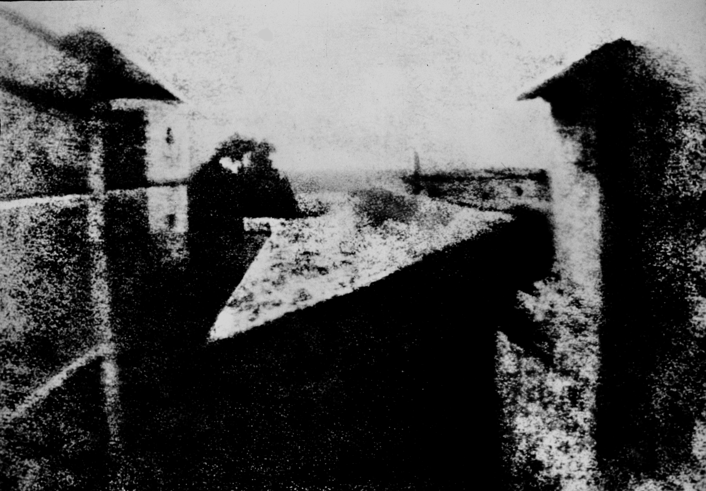
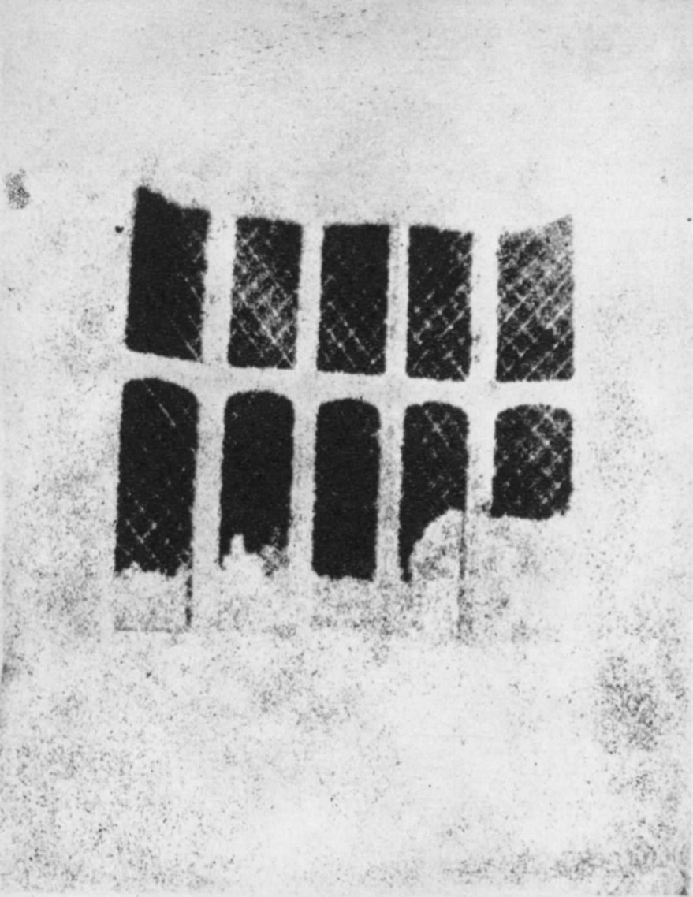
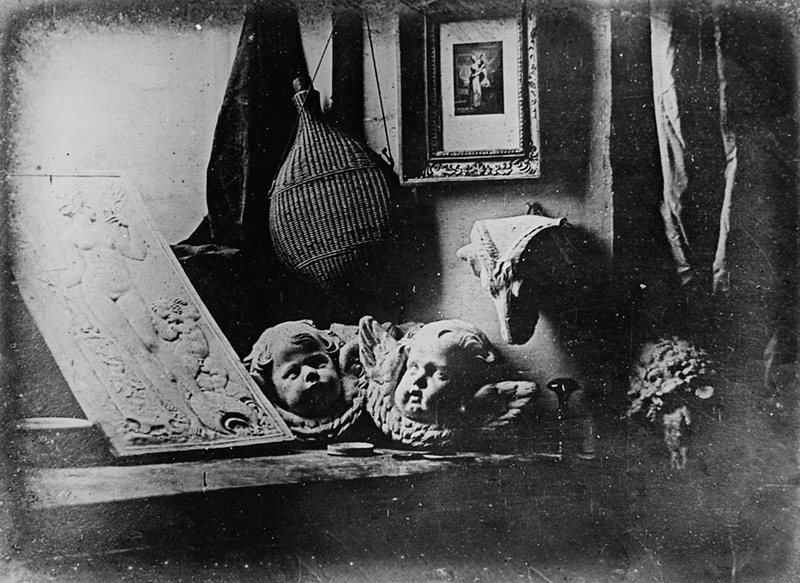
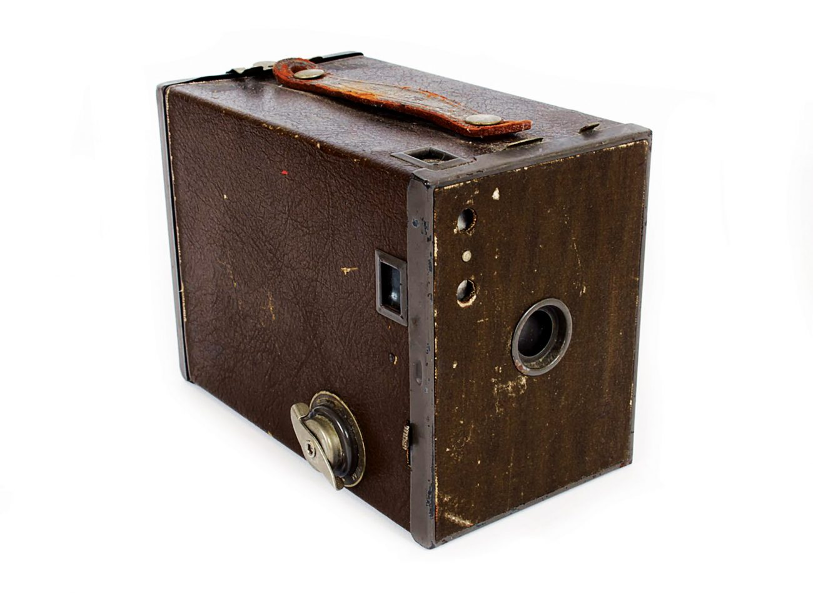
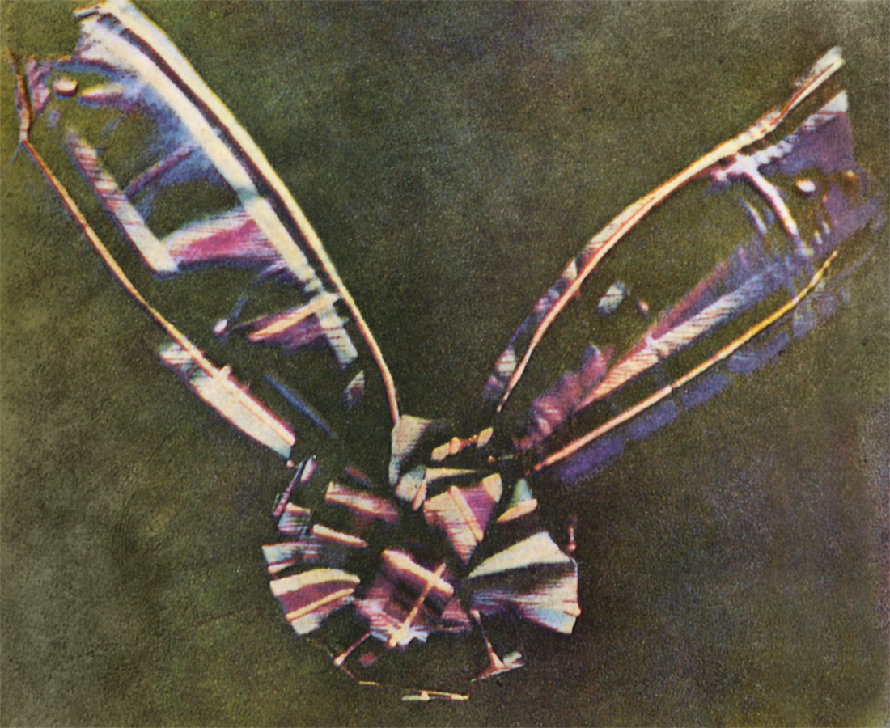
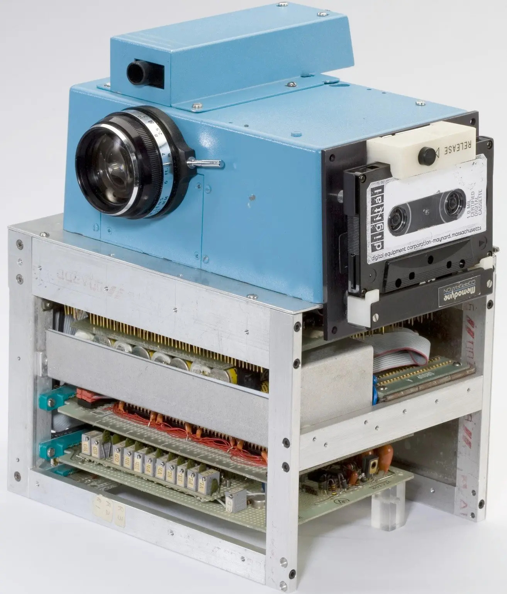

Фотография — технология записи изображения
путём регистрации оптических излучений
с помощью светочувствительного фотоматериала
или полупроводникового преобразователя.
Путешествие во времени
01
XIX век
Изобретение фотографии
Фотография появилась благодаря нескольким
открытиям, сделанным задолго до этого:
изучению света и его свойств, камеры-обскуры,
чувствительности к свету нитрата серебра
и другим открытиям и изобретениям в химии.
Первый сохранившийся снимок, сделанный с
помощью камеры, создал французский
изобретатель Жозеф Нисефор Ньепс
в 1826 или 1827 году.
Фотография получила название
«Вид из окна в Ле Гра».
Для её создания потребовалась очень
длительная экспозиция,
продолжавшаяся несколько часов.
Ньепс использовал металлическую пластину,
покрытую светочувствительным веществом.
Этот метод получил название гелиография,
или «рисование солнцем».

«Вид из окна в Ле Гра»,
Жозеф Нисефор Ньепс, 1826–1827 гг.
С 1829 года Ньепс начал работать совместно
с Луи Дагером, проводившим опыты в сфере
закрепления изображений.
Какое-то время они работали вместе,
но успеха Дагер достиг уже после
смерти партнёра.
В 1839 году он представил способ получения
детализированных изображений
на посеребрённых медных пластинах.
Свой способ получения фотографического
изображения Дагер назвал «дагеротипия».
Именно 1839 год принято считать
официальной датой рождения фотографии.
Практически одновременно английский учёный
Уильям Генри Фокс Тальбот разработал
негативно-позитивный процесс,
который позволял получать несколько
отпечатков с одного негатива.
Этот принцип впоследствии стал
основой плёночной фотографии.

«Окно аббатства Лекок», 1835 год

Один из первых дагеротипов, 1837 год
02
Вторая половина XIX века
Развитие фотографии
и появление фотосъёмки
Во второй половине XIX века фотографические
технологии начали стремительно развиваться.
Время выдержки сокращалось,
качество изображений улучшалось,
а фотографическое оборудование постепенно
становилось удобнее и доступнее.
Настоящую революцию совершил американский
предприниматель Джордж Истмен,
основатель компании Kodak.
В 1888 году появилась камера Kodak,
использовавшая рулонный светочувствительный
материал. Пользователям больше не требовалось
самостоятельно выполнять сложные химические
процедуры для каждого снимка.
Благодаря развитию фотоплёнки фотография
постепенно перестала быть занятием
исключительно учёных и профессионалов.
Люди получили возможность сохранять
семейные воспоминания, путешествия
и важные события своей жизни.

Развитие массовой фотографии —
камера Kodak
03
1861–1935 годы
Появление цветной фотографии
Первые фотографии были чёрно-белыми,
но исследователи стремились научиться
передавать реальные цвета окружающего мира.
Попытки изобрести цветную фотографию
начались сразу же после изобретения фотографии.
В 1861 году физик Джеймс Клерк Максвелл
продемонстрировал метод создания цветного
изображения с помощью трёх цветовых каналов —
красного, зелёного и синего.
Этот принцип до сих пор используется
в цифровых экранах и технологиях
обработки изображений.
В 1907 году братья Люмьер представили
коммерчески доступный процесс цветной
фотографии «Автохром».
Он позволял получать цветные изображения
на стеклянных пластинах.
Позднее появились многослойные цветные
фотоплёнки, в том числе Kodachrome
в 1935 году.
Цветная фотография постепенно получила
широкое распространение,
открыв новые возможности для творчества,
рекламы и документальной съёмки.

«Тартановая лента»,
Джеймс Клерк Максвелл и Томас Саттон,
1861 год
04
XX век
Фотография как искусство
В XX веке фотография окончательно
утвердилась не только как техническое
изобретение, но и как самостоятельный
вид искусства.
Фотографы начали использовать свет,
композицию, перспективу и движение
для передачи эмоций и создания
художественных образов.
Появились и получили развитие различные
жанры: портретная, пейзажная, репортажная,
уличная, архитектурная
и художественная фотография.
Значительный вклад в развитие фотоискусства
внесли Анри Картье-Брессон,
известный идеей «решающего момента»,
Ансель Адамс, прославившийся выразительными
пейзажами, и Доротея Ланж,
чьи документальные снимки отражали жизнь
людей во времена Великой депрессии.
Фотография стала способом не просто
фиксировать реальность,
но и рассказывать истории,
выражать идеи и менять взгляд общества
на окружающий мир.
Семья сборщиков гороха в период кризиса.
Фотография Доротеи Ланж, 1936 год
05
1969–2000-е годы
Цифровая революция
История цифровой фотографии началась
в 1969 году, когда учёные Уиллард Бойл
и Джордж Смит разработали технологию,
позволяющую получать изображения
без фотоплёнки.
В 1975 году инженер Kodak Стивен Сассун
создал первый экспериментальный цифровой
фотоаппарат.
Он имел разрешение всего 0,01 мегапикселя
и сохранял снимки на магнитную кассету.
В 1980–1990-х годах появились первые
цифровые камеры с картами памяти
и цифровые зеркальные фотоаппараты.
Однако они стоили очень дорого
и использовались преимущественно
профессиональными фотографами.
Настоящий прорыв произошёл в 2003 году,
когда Canon выпустила EOS 300D —
доступную цифровую зеркальную камеру
стоимостью менее 1000 долларов.
Благодаря развитию технологий цифровые
фотоаппараты быстро стали популярными.
К середине 2000-х годов цифровая фотография
практически вытеснила плёночную
с массового рынка,
сделав съёмку проще и доступнее.

Экспериментальный цифровой фотоаппарат
инженера Kodak Стивена Сассуна,
1975 год
06
Наше время
Современная фотография
Сегодня фотография объединяет искусство,
науку и современные технологии.
Камеры способны создавать изображения
с высокой детализацией даже при слабом
освещении, а программы обработки позволяют
тонко управлять цветом, контрастом
и атмосферой снимка.
Особую роль сыграло развитие смартфонов.
Теперь камера практически всегда находится
под рукой, а фотографии можно мгновенно
публиковать и показывать людям
по всему миру.
Современные технологии искусственного
интеллекта помогают улучшать качество
изображений, распознавать объекты
и автоматизировать обработку.
При этом художественное видение фотографа
по-прежнему остаётся важнейшей частью
творческого процесса.